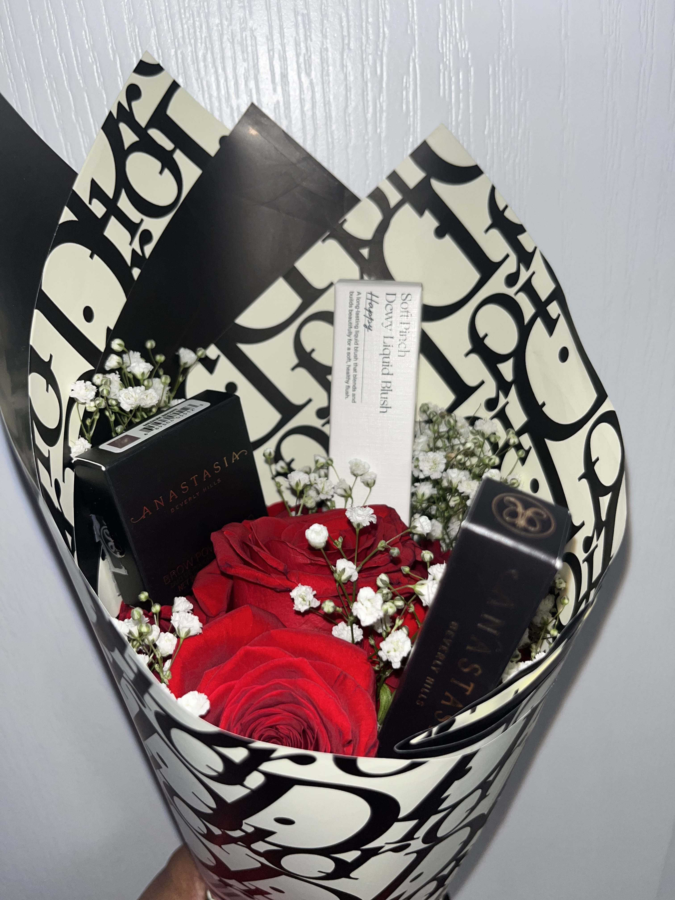
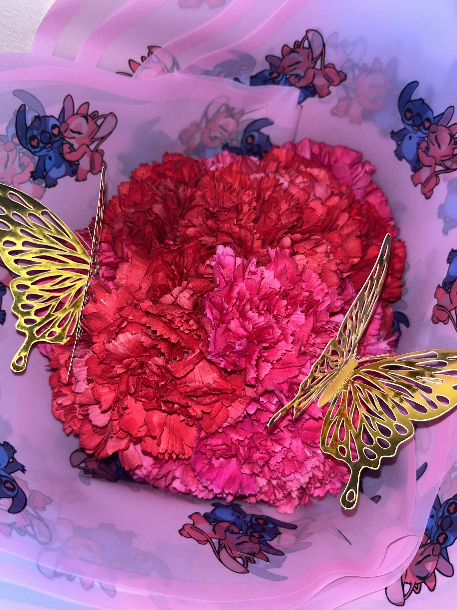
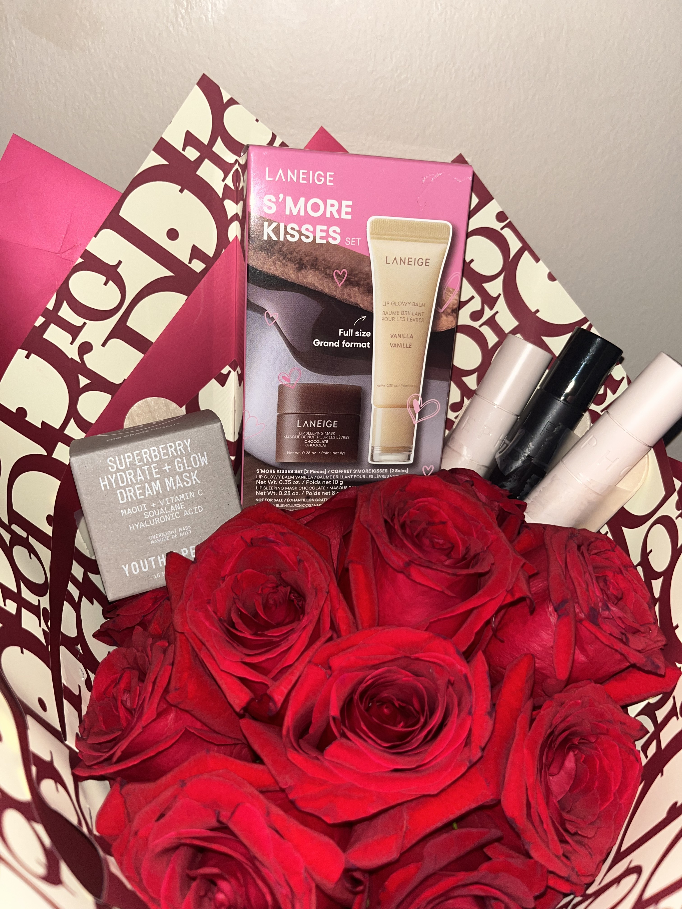
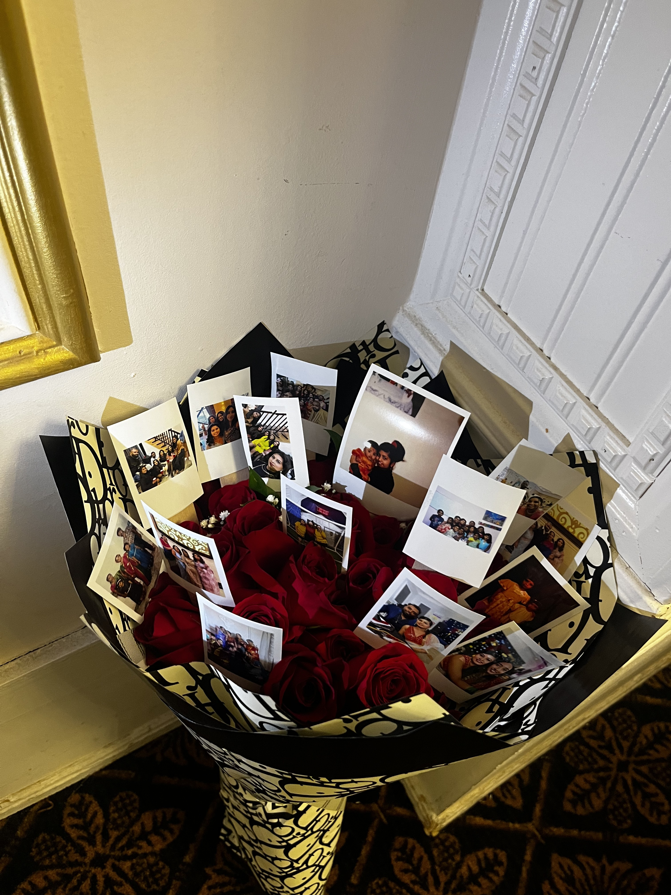

My Work
Featured Project: Custom Bouquet Design
A luxury-inspired bouquet designed with attention to color harmony and balance. This arrangement showcases my approach to layering textures, creating depth, and combining soft florals with bold accents to create an elegant and meaningful piece.
Custom Bouquets
Handcrafted bouquets created through my small business, Decor Blossom. These pieces were designed using layered textures, soft florals, and thoughtful composition to express mood, style, and personality.
A warm-toned bouquet combining neutrals and soft pinks with delicate wrapping details.
A pink-red bouquet designed with bold tone contrast and a soft romantic aesthetic.
A custom ribbon bouquet combining structured wrapping with floral arrangement elements.
A baby shower bouquet styled with a soft palette and layered ribbon textures for elegance.
Ribbon Designs
Ribbon arrangements designed for events and special occasions. Each piece incorporates texture pairing, color theory, and layered details to create polished decorative displays.

A handcrafted ribbon arrangement featuring intentional layering, movement, and a soft celebratory theme.
Decorative Bottle Art
Customized decorative bottles created with coordinated color palettes and detailed embellishment. These pieces are designed to elevate gifting, event décor, or personal space styling.

A personalized decorative bottle featuring warm tones, natural textures, and elegant wrapping for a stylish modern finish.